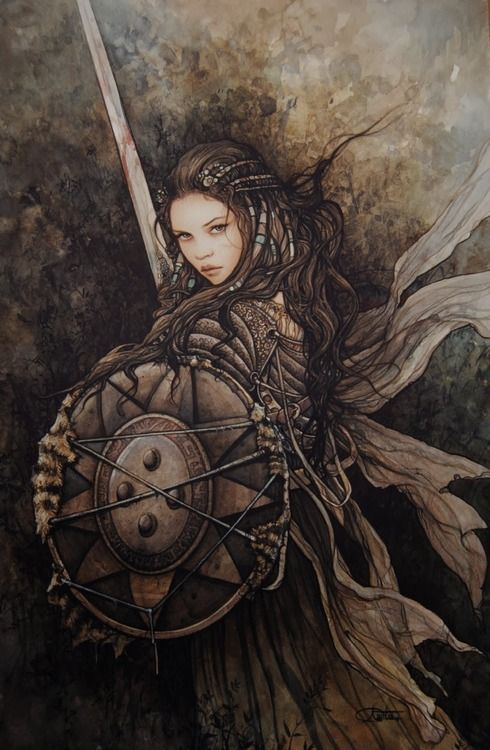

Uzak Diyarlar'da birçok ırk bulunmaktadır. Her bir ırkın kendine göre nitelik puanları ve yetenekleri kısacası artıları ve eksileri vardır. Aşağıda ırkların nitelik puanları listelenmektedir. Fakat şunu unutmayın, aşağıdaki puanlar seçilen sınıfa göre değişir. Hangi niteliğin ne miktarda değişeceğini de aşağıdaki tabloda bulabilirsiniz.

Uzak Diyarların en kalabalık ırkıdır. İnsan ırkını diğer ırklardan ayıran en önemli özellik her türlü ortama kolaylıkla uyum sağlayabilmeleridir. Bu nedenle bütün sınıflar için uygun olan tek ırktır. Ayrıca yönelim olarak da tahmin edilebilir bir ırk değildir. İçlerinde ezileni koruyan, merhameti bol olanı da vardır,şeytanı bile imrendirecek kadar zalim olanı da… Güç, zeka, bilgelik, çeviklik, bünye, karizma bakımından ortalama değerlere sahip bir ırktır.
Cüceler Uzak Diyarların kısa boylu ama güçlü, uzun sakallarıyla meşhur ırklarındandır. Pek zeki bir ırk olmasa da uzun yaşam süreleri, onların diyardaki bir çok ırka göre daha bilge bir ırk olmasını sağlamıştır. Çeviklik bakımından zayıf ve sessiz hareket etme konusunda başarız oldukları için bazı sınıflar için pek uygun değildirler. Fakat hemen hemen hepsi güçlü ve alt edilmesi zor savaşçılardır. Genel olarak mağaralarda ve dağlarda yaşamayı tercih ederler. Ama içlerinde şehirde yaşamayı ya da yaban hayatı sürmeyi tercih edenleri de vardır. Taş ve maden işçiliğinde oldukça maharetlidirler. Fakat yüzme konusunda da bir o kadar beceriksizdirler. Büyüye, zehire ve hastalıklara karşı dirençleri oldukça yüksektir. Yer altında yaşamaları ve değerli madenlere olan düşkünlükleri onları duergarlara karşı doğal bir düşman haline getirmiştir. Duergarlardan daha çok nefret ettikleri hiçbir varlık yoktur diyarda ve bazı söylentilere göre kadim lisanlarında duergarlarla ilgili yüze yakın hakaret ve küfür mevcuttur.